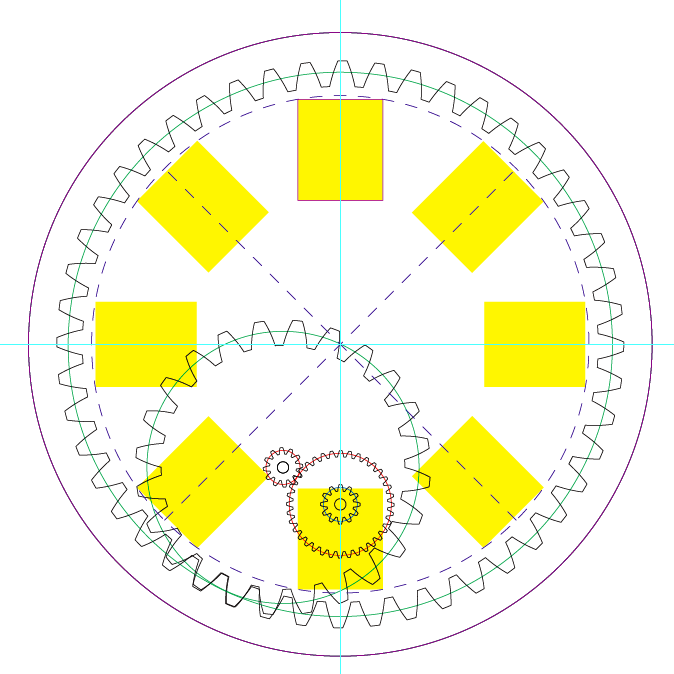

Kousuke Kikuchi
Fab Academy Participant and PhD Candidate
Week 15: Mechanical Design, Machine Design
Summary: A Galileo's Pendulum Clock
Added at July 28 about simple machine for Flip Comic.
Data are available at this link.
design
This week's assignment was to design or modify a machine which could be moved manually, and to automate the machine. When I thought about the assignment, pendulum clock came to my mind. The historical clock was designed by Galileo Galilei, with the discovery of pendulum.

Galileo's pendulum clock
I was able to find the good example of Galileo's Pendulum Clock from Thingiverse. Based on this example, I learned the system and mechanism of the clock.
Necessities:
1: 600 x 300 sized plywood with 5mm thickness (The file recomended to use 600 x 450 plywood,but if we use second document of the file, 600 x 300 was enough)
2: 4.5 [mm] shaft
3: 5.5 [mm] shaft
4: 10 flanges (download this stl file and output 10 pieces)
Assembly
A cdr format file is for CorelDRAW. After opening the file, I outputed this file with Epilog Laser Cutter. (Recommned parameters were power 100%, speed 10%)
But, the problem was different thickness. Here in Japan, no material could be found with 5mm thickness. It gave me difficult assemble step.
So, I sanded out 0.5mm.
Difficult to assemble.
I found shafts were needed. So I bought them with 4 [mm], 5 [mm] and 6 [mm].

After bit of assembly, flanges were needed. So, I designed with Rhinoceros.
And Replicator printed out 6 flanges. But I found other 4 flanges were required.
The mechanism of Galileo's Pendulum Clock.
Since I sanded 6mm of shafts into 5.5mm, these ragged parts create gap between each parts. The ragged parts between shafts and gear created less friction than ordinary parts and were not able to transmit power to the next. So, I glued all the parts. Does anyone know how the mechanical engineer designs gears and shafts which can transmit power?
Succeeded assembling with adhensive. But the sanded shaft also created a ragged surface on it. And made a tilt between shaft and gear.
But after the assembly, it was not able to work properly. The rotation of the gears was not fit if I rotated the first shaft.
Problems on this clock
Most problems on this Galileo's Pendulum Clock were thought to be three points.
Firstly, rigid joints were not implemented in this mechanism. This fact created too loose for gears and shafts to transmit their power.
Secondly, the different size of parts had to be sanded out manually, and emerged ragged surface on the shafts. This fact distorted the axes of the gears, and slightly change their flequencies.
Thirdly, design of the gear might be different. The gears used in this clock were angular. Since gear is basically rotated, a kind of circular trajectory should be illustrated.
Requirements to fit each gears
1. Normal pitches to be same.
2. Shape of the teeth to be properly designed.
Redesign of the clock
I modified the pdf file to fit to JIS. This design requires 600[mm] x 300[mm] x 5.5[mm] MDF or plywood, 5[mm] and 6[mm] shafts. Also, 10 flanges are necessary. All the files can downloaded from my GitHub. But, I was not able to alter the gear design.
Flip Comic
I found Some products were decorated with flip comic, "afternoon tea" by Kirin Corp.
I wanted to automated flip comic machine. So, after the failure of the pendulum clock, I attempted to make this one.
Firstly, I simply designed the machine based on Illustrator CS6, and gear design was attained from web page. Also, from July 25, I was able to use Universal Lasercutter VSL3.50. Since this laser cutter outputs only 30W, I had to check the power and speed parameters.
FIrst trial:

This is the first mechanics design. The bottom layer was glued to the second bottom layer, making rotation of the pictures. However, I found two mistakes. First of all, it was impossible to assemble its structure. Also, since the two bottom layers were rotated, it required a lot of torque at rotating this machine. So I re-designed.
Second trial.
This time, the top Z=14 gear was attached to Z=44, and transmit the power to Z=14 gear which is connected to the rotation layer.
it was able to rotate properly, except the fact that I was not able to see proper flip comic. To see it, it requires the exact timing of blink. Indeed, I used a combination of stepper motor for automation and a white LED to show this comic.
Stepper Motor
I bought two stepper motors at Akihabarafor this assignment. st-42byg0506h and 24BYJ48. Since the Maker movement of Japan has been quite different from the United States, I was not able to attain some of the FabLab Inventory.
I milled a board and stuffed all necesities for stepper example. But, something wrong with the 24BYJ48. Because after checking data sheet carefully, this requires 12V of electricity and 8 phases at driving it. For example, to drive this motor, we should switch like this:
1 -> 1 and 2 -> 2 -> 2 and 3 -> 3 -> 3 and 4 -> 4 -> 4 and 1
Unless I bought 12V and 9V DC batteries, I did not try using this one because I should add some of programs.
The second motor was st-42byg0506h. It can drive properly by using a sample board.
I used sample program for moving.
// // // hello.stepper.44.full.c // // full stepping hello-world // // Neil Gershenfeld // 11/14/10 // // (c) Massachusetts Institute of Technology 2010 // Permission granted for experimental and personal use; // license for commercial sale available from MIT. // #include <avr/io.h> #include <util/delay.h> #define output(directions,pin) (directions |= pin) // set port direction for output #define set(port,pin) (port |= pin) // set port pin #define clear(port,pin) (port &= (~pin)) // clear port pin #define pin_test(pins,pin) (pins & pin) // test for port pin #define bit_test(byte,bit) (byte & (1 << bit)) // test for bit set #define MOSFET_port PORTA // MOSFET port #define MOSFET_direction DDRA // MOSFET direction #define brown (1 << PA0) // MOSFET output pins #define black (1 << PA1) // " #define yellow (1 << PA2) // " #define orange (1 << PA3) // " #define on_delay() _delay_us(50) // PWM on time #define off_delay() _delay_us(10) // PWM off time #define PWM_count 200 // number of PWM cycles static uint8_t count; // // yellow, brown PWM pulse // void pulse_yellow_brown() { for (count = 0; count < PWM_count; ++count) { set(MOSFET_port, yellow); set(MOSFET_port, brown); on_delay(); clear(MOSFET_port, yellow); clear(MOSFET_port, brown); off_delay(); } } // // yellow, black PWM pulse // void pulse_yellow_black() { for (count = 0; count < PWM_count; ++count) { set(MOSFET_port, yellow); set(MOSFET_port, black); on_delay(); clear(MOSFET_port, yellow); clear(MOSFET_port, black); off_delay(); } } // // orange, brown PWM pulse // void pulse_orange_brown() { for (count = 0; count < PWM_count; ++count) { set(MOSFET_port, orange); set(MOSFET_port, brown); on_delay(); clear(MOSFET_port, orange); clear(MOSFET_port, brown); off_delay(); } } // // orange, black PWM pulse // void pulse_orange_black() { for (count = 0; count < PWM_count; ++count) { set(MOSFET_port, orange); set(MOSFET_port, black); on_delay(); clear(MOSFET_port, orange); clear(MOSFET_port, black); off_delay(); } } // // clockwise step // void step_cw() { pulse_yellow_brown(); pulse_yellow_black(); pulse_orange_black(); pulse_orange_brown(); } // // counter-clockwise step // void step_ccw() { pulse_orange_brown(); pulse_orange_black(); pulse_yellow_black(); pulse_yellow_brown(); } int main(void) { // // main // static uint8_t i,j; // // set clock divider to /1 // CLKPR = (1 << CLKPCE); CLKPR = (0 << CLKPS3) | (0 << CLKPS2) | (0 << CLKPS1) | (0 << CLKPS0); // // initialize MOSFET pins // clear(MOSFET_port, brown); output(MOSFET_direction, brown); clear(MOSFET_port, black); output(MOSFET_direction, black); clear(MOSFET_port, yellow); output(MOSFET_direction, yellow); clear(MOSFET_port, orange); output(MOSFET_direction, orange); // // main loop // while (1) { for (i = 0; i < 10; ++i) { for (j = 0; j < i; ++j) step_cw(); } for (i = 10; i > 0; --i) { for (j = 0; j < i; ++j) step_cw(); } } }
This program was able to rotate properly. So, I tried to make a board which can blink corresponding to the roration of the motor. However, As time went by, both LED and rotation became sapping, culminating stopping. After several attemps, I was not able to drive both LED and motor at the same time. That means, it was not able to blink at the exact timing of rotation. However, I have already confirmed the program.
Automation
For the automation, I used the stepper motor which can drive 5 [V]. However, the problem for automation was to solve the non-fixed motor which can be moved with the rotation.
So, I altered the design to solidify its motor by using four screws, washers and nuts.
One of the most important for making gear of motor is that it must has precise size of its rotation axis. So, I had to alter the design again and again into like this picture.
The result of this assembly is:
This time, I was able to check that whole parts rotated well. But the gears were not glued together perfectly, making gears detached from the shafts.
To consolidate each parts, I bought screws nuts and a ballbaring for making it easier to be rotated.
The problem on this mechanism was that the screws were slakened due to the vibration of the motor. I thought if the gears were tightened with the nuts, it would transmit the power to the next. So, I glued the end of each shafts.
The example of this rotation. Even I used iron shafts and ballbaring, this shaft has tilted due to tiny torelance.
Conclusion
I tried to design a flip comic machine, and mechanism of it was success. But, there were three problems. First one is the rotation axes. The axes were tilted little bit due to the error at hand assembly. Secondly, there were no mechanisms to fix the axis, making shafts difficult no to be tilted. Hence, this problem will be solved by altering the design. Third one is LED. This time, LED was not able to blink properly at using a motor. Even I used USB for power supply ( 5V and 500mA), LED and motor are not used.